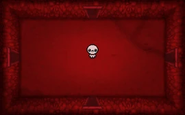
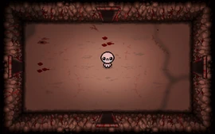
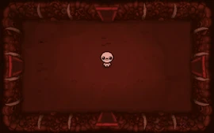
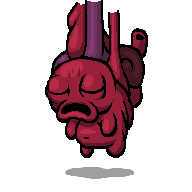
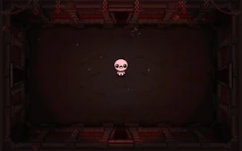
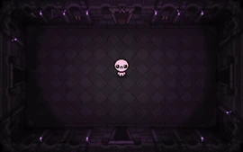

Coração

esse chefe pode ser encontrado nos andares:
- Womb II
- Scarred womb II
- utero II



esse chefe começa envocando inimigos, e subindo na tela, ficando imune a qualquer dano até derrotar os quatro primeiros inimigos sumonados, sendo os dois primeiros sendo sempre olhos que soltam lazer na direção de isaac.
apos matar esse chefe 11 vezes, você libera o it live.

apos virar o it live, quando derrotado, libera duas opções de novos andares para se fazer, descendo pro Sheol ou subindo para a cathedral
se matar o coração ou it live em menos de 30 minutos de run, você liberará o andar ??? para enfrentar o Hush
é possivel enfrentar o coração nos andares alternativos:
- Gehanna II
- Mausoleum II


para isso é necessario ter os dois pedaços da faca, derrotar a MOM no andar alternativo, e usar a faca na porta de carne no chefe
a verção alternativa do coração nunca terá a aparencia do it live e tera alguns ataques diferentes de sua verção normal. quando derrotada , liberará os andar Corpse